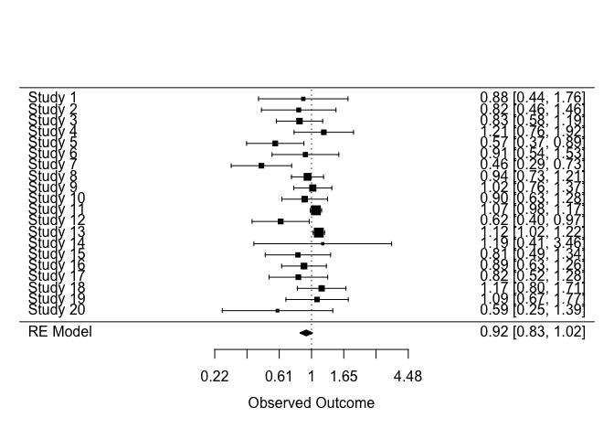
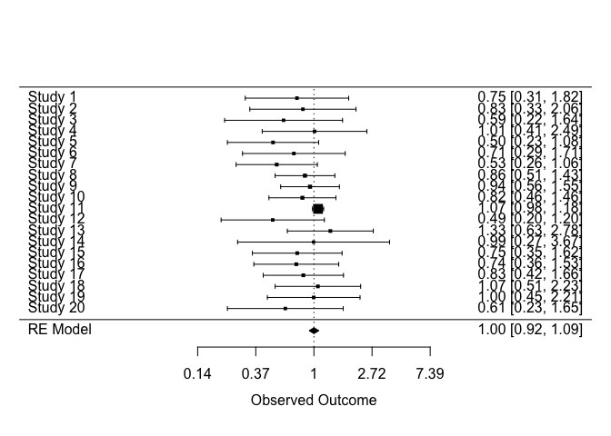

The goal of triangulate is to create a generalised version of the bias-adjusted meta-analysis approach originally proposed by Turner et al.
There are a number of steps to this process:
- Define the causal question of interest
- Identify relevant evidence sources and standardise effect directions
- Specify an idealised version of each study
- Assess the extent and direction of bias/indirectness in each result
- Define modifying terms for bias and indirectness in each result
- Calculate bias-/indirectness-adjusted results and perform meta-analysis
This package deals with steps 5 and 6.
Installation
To install either run
install.packages('triangulate', repos = c('https://mrcieu.r-universe.dev', 'https://cloud.r-project.org'))or
remotes::install_github("mcguinlu/triangulate")⚠️ WARNING NOTES
WARNING #1: This package is under development, and as such the API is subject to change at any point without warning.
WARNING #2: The approach described requires work in the preparation of data to work with the package. Please be sure to read the documentation and make use of helper functions to check whether your data is set-up right.
WARNING #3: The approach described requires careful choice of valid prior distributions of bias/indirectness.
Example
Datasets
The approach described
# Load libraries
library(magrittr)
library(triangulate)
# See column names of dat_bias
colnames(dat_bias)
#> [1] "result_id" "study" "type" "yi" "vi" "d1j"
#> [7] "d1t" "d1d" "d2j" "d2t" "d2d" "d3j"
#> [13] "d3t" "d3d" "d4j" "d4t" "d4d" "d5j"
#> [19] "d5t" "d5d" "d6j" "d6t" "d6d" "d7j"
#> [25] "d7t" "d7d"
head(dat_bias)
#> result_id study type yi vi d1j d1t
#> 1 13401-2 Study 1 NRSI -0.12783337 0.12506586 High Add
#> 2 14632-2 Study 2 NRSI -0.19845094 0.08680919 Moderate Add
#> 3 14658-2 Study 3 NRSI -0.18632958 0.03361240 High Add
#> 4 14665-6 Study 4 NRSI 0.19062036 0.05526578 High Add
#> 5 14720-1 Study 5 NRSI -0.56211892 0.05141924 High Add
#> 6 14761-1 Study 6 NRSI -0.09431068 0.06969822 High Add
#> d1d d2j d2t d2d d3j d3t
#> 1 Favours comparator Low None None Moderate Prop
#> 2 Favours experimental Moderate Add Favours comparator Low None
#> 3 Favours comparator High Add Favours comparator Low None
#> 4 Favours comparator Moderate Add Unpredictable Low None
#> 5 Favours comparator Low None None Low None
#> 6 Favours comparator Moderate Add Favours comparator Low None
#> d3d d4j d4t d4d d5j d5t d5d d6j d6t
#> 1 Unpredictable Low None None Low None None Low None
#> 2 None Low None None Low None None Moderate Add
#> 3 None Low None None Low None None Moderate Add
#> 4 None Low None None Low None None Low None
#> 5 None Low None None Moderate Prop Unpredictable Low None
#> 6 None Low None None Moderate Prop Unpredictable Low None
#> d6d d7j d7t d7d
#> 1 None Moderate Prop Away from null
#> 2 Unpredictable Moderate Prop Away from null
#> 3 Unpredictable Moderate Prop Away from null
#> 4 None Moderate Prop Away from null
#> 5 None Moderate Prop Away from null
#> 6 None Moderate Prop Away from null
tri_dat_check(dat_bias)
#> tri_dat_check(): All expected columns are present (mode = 'minimal').For details on how to create these datasets, see the Creating triangulation datasets vignette (under construction).
Once we load our data, helper functions will convert it to long format and convert to absolute directions of bias/indirectness.
dat_bias <- triangulate::dat_bias %>%
# Convert to long format
tri_to_long() %>%
tri_absolute_direction() %>%
tri_append_bias(triangulate::dat_bias_values)Then apply the same approach to the indirectness dataset:
dat_ind <- triangulate::dat_ind %>%
# Convert to long format
tri_to_long() %>%
tri_absolute_direction() %>%
tri_append_indirect(triangulate::dat_ind_values)Add prior distributions of bias/indirectness
dat_bias_values
#> domain j bias_m_add bias_v_add bias_m_prop bias_v_prop
#> 1 all high 0.18 0.10 0.06 0.032
#> 2 all moderate 0.09 0.05 0.03 0.016
#> 3 all low 0.00 0.00 0.00 0.000Create final dataset and analyse
We now have two clean datasets, one for bias and one for indirectness, that we can use to
dat_final <- tri_prep_data(dat_bias, dat_ind)At this point, we have an unadjusted (yi, vi) and adjusted (yi_adj, vi_adj) estimates for each result.
These estimates can then simply be passed to metafor for analysis
model <- metafor::rma(
yi = yi,
vi = vi,
data = dat_final,
slab = dat_final$study,
method = 'DL'
)
# Pass model to forest plot function
metafor::forest(
model,
atransf = exp,
)
model_adj <- metafor::rma(
yi = yi_adj,
vi = vi_adj,
data = dat_final,
slab = dat_final$study,
method = 'DL'
)
# Pass model to forest plot function
metafor::forest(
model_adj,
atransf = exp
)